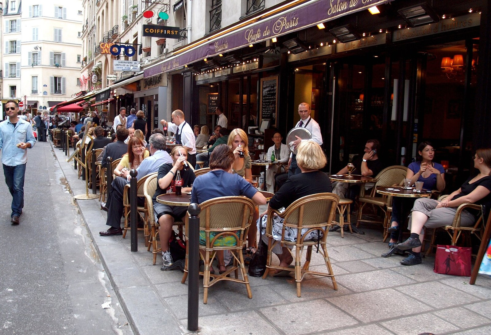

Au café: a role-play
Why can about ten short phrases get you through a whole café visit in France?
After a long morning at ITER, you sit down at a café terrace in Provence with a friend. The waiter comes to your table. In this lesson you practise everything you need there: ordering a drink and something to eat, asking what there is and what it costs, asking for the bill, paying and thanking. The café, its menu and its prices are invented for practice.
Prior knowledge
- Greetings, tu and vouschapter Bonjour ! Introducing yourself
- Prices in euroschapter Numbers and prices
Core path: follow the steps in order. Tasks marked Optional give extra practice. Optional tasks: 1.
Think about it
It is half past one. After a morning at the ITER site, you and a friend sit down at a café terrace in the shade of the plane trees. The menu is on the table, everything is in French, and the waiter is coming towards you with a tray. You are hungry, you have about ten euros each, and you want to pay before the bus leaves at half past two.
What will you need to say during the next hour, and in which order?
Sentence starters
- First we need to …, then …
- In a Finnish café you usually …, but …
- I already know the French words …
- The hardest part could be …, because …
Think about it: a café visit step by step
List the steps of a café visit, from the moment you sit down to the moment you leave.
How does it go in a Finnish café: do you order at the counter or at the table? Then write every French café word you already know (drinks, food, phrases).
Discuss with a partner for three minutes, then write your list together.
Model answer
Steps: sit down and read the menu, greet the waiter, order drinks and food, ask about anything we do not understand, eat, thank and say goodbye. In many Finnish cafés we order at the counter and carry our own tray; at a French café terrace the waiter usually takes the order at the table. French words we know: café, croissant, crêpe, baguette, croque-monsieur, bon appétit, merci, s'il vous plaît.
Assess your own answer
Tick the points your own answer already contains.
Review the theory summary.
Predict
Make your predictions before investigating 2 questions
Prediction 1: the first words
Prediction 2: the bill
Investigate
Listen: the phrases of a café visit
Listen to each phrase, first slowly and then at normal speed, and repeat it aloud. The hints in italics use Finnish letters: capitals show the stressed syllable, and õ, ã and ẽ are nasal vowels; č is the ch of English church.
A lunch at the café
Read the dialogue and notice three things: the order of the steps, the phrase the customer uses to order, and how she gets the bill.
Watch: another café dialogue
Now watch a short café dialogue made by a French teacher. Watch once with the English subtitles. Watch again and note: (1) how the customer greets, (2) what is ordered, (3) any question or price you hear, (4) how the visit ends. Then find one phrase in the video that is different from the dialogue above, and the spelling mistake the author warns about.
Order a café conversation
What did you notice?
Theory summary
At a French café: what happens when

A visit to a café follows a simple order, and each step has its own phrase.
- Greet. When the waiter comes, say Bonjour, madame or Bonjour, monsieur before anything else. Call a waiter with S'il vous plaît ! or Excusez-moi !, not with Garçon !: it is old-fashioned, and many waiters find it rude.
- Order. The waiter asks Vous avez choisi ? or Vous désirez ?, and you answer with Je voudrais … (I would like) or Je vais prendre … (I'll have), and s'il vous plaît. Et avec ça ? means anything else?
- Ask. Qu'est-ce que vous avez comme sandwichs ? (What kind of sandwiches do you have?), Qu'est-ce qu'il y a dans la quiche ? (What is in the quiche?), C'est combien, le croque-monsieur ?
- Ask for the bill. In France the waiter usually does not hurry you, and the bill often comes only when you ask for it: L'addition, s'il vous plaît.
- Pay and thank. Je peux payer par carte ? or pay in cash (en espèces). The service charge is already included in French prices by law (service compris), so a tip is not required; many people simply round up a small bill: Gardez la monnaie. (Keep the change.) Then Merci, bonne journée ! and Au revoir !
Coffee words. Un café is a small cup of strong black coffee. Un café crème has milk or cream, un café noisette a little milk foam, and un café allongé is a longer, weaker coffee.
Polite ordering
The waiter is an adult you do not know, so you use vous, even if you are only two teenagers at the table. With your friend you say tu: Tu prends quoi ? (What are you having?).
The most useful polite form is je voudrais (I would like). Je veux (I want) is grammatically correct, but to a waiter it sounds like a demand, as I want does in English. Short orders are fine when they end politely: Un café, s'il vous plaît.
Summary
| You want to … | You say |
|---|---|
| greet the waiter | Bonjour, madame / monsieur. |
| call the waiter | S'il vous plaît ! Excusez-moi ! |
| order | Je voudrais un thé, s'il vous plaît. Je vais prendre un croissant. |
| ask what there is | Qu'est-ce que vous avez comme sandwichs ? |
| ask what is in a dish | Qu'est-ce qu'il y a dans la quiche ? |
| ask a price | C'est combien, la tarte ? |
| ask for the bill | L'addition, s'il vous plaît. |
| pay | Je peux payer par carte ? Voilà. Gardez la monnaie. |
| thank and leave | Merci beaucoup. Bonne journée ! Au revoir ! |
The waiter may say: Vous avez choisi ? Vous désirez ? Et avec ça ? Sur place ou à emporter ? (to eat here or to take away?) Ça fait … (That comes to …)
Back to your predictions
Compare your two predictions with the theory. Then answer the opening question in English in one or two sentences: why can about ten short phrases get you through a whole café visit in France? Name the step where each of your predictions belongs.
Would you change your prediction?
Apply
Complete the order
Understand the waiter
Role-play: from script to free speaking
Work in pairs, with the menu above. Each round gives you less support.
Round 1 (cues): perform the dialogue A lunch at the café again in step 3 (Perform), from the English cues only. Change the drink and the dish, and the total with them.
Rounds 2 and 3 (role cards): one partner is the customer, the other the waiter. Open only your own card below (Customer only or Waiter only), do not show it, and speak without writing first. The other partner has information that you do not have, so listen and react. Swap the roles in round 3.
Word bank
Bonjour, madame / monsieur, Vous avez choisi ?, Je voudrais …, Je vais prendre …, Et avec ça ?, Qu'est-ce que vous avez comme … ?, Qu'est-ce qu'il y a dans … ?, C'est combien, … ?, L'addition, s'il vous plaît, Ça fait …, par carte, en espèces, Gardez la monnaie, Merci, bonne journée
Sentence starters
- Bonjour, monsieur. Je voudrais …, s'il vous plaît.
- C'est combien, la tarte ?
- Excusez-moi ! L'addition, s'il vous plaît.
- Je peux payer par carte ?
- Merci beaucoup. Au revoir !
The waiter: Ça fait … euros …, Bon appétit !, Je vous apporte ça tout de suite.
Customer only Round 2: customer card
You are hungry, but you do not eat meat. You have 10 € and want a hot drink too. Ask what is in at least one dish and ask one price before you order. Pay by card.
Useful: Qu'est-ce qu'il y a dans le croque-monsieur ? Ah, je ne mange pas de viande. Alors, je vais prendre …
Waiter only Round 2: waiter card
Today there are no more croissants: Désolé, il n'y a plus de croissants. The quiche has vegetables and cheese; the croque-monsieur has ham and cheese. Answer the customer's questions, give the total and take the card.
Customer only Round 3: customer card
You order for two: you and your friend (your partner's imaginary friend). Order two different drinks and one dessert to share. Ask the price of one dessert. Pay in cash and let the waiter keep the change.
Waiter only Round 3: waiter card
The card reader does not work today: cash only (Désolé, seulement en espèces.). Recommend a dessert (Je vous conseille la tarte aux pommes.). Give the total and thank the customers.
Role-play: your dialogue
After round 2, write down in French the dialogue you performed, at least eight lines. Mark the line where you reacted to something you did not know in advance.
Perform round 2 with your partner first, then write it together. If you can, perform it for another pair, who check it with the criteria below.
Model answer
- Serveur : Bonjour ! Vous avez choisi ?
- Cliente : Bonjour, monsieur. Je voudrais un chocolat chaud, s'il vous plaît.
- Serveur : Très bien. Et avec ça ?
- Cliente : Un croissant, s'il vous plaît.
- Serveur : Désolé, il n'y a plus de croissants.
- Cliente : Ah ! Qu'est-ce qu'il y a dans la quiche ?
- Serveur : Des légumes et du fromage.
- Cliente : C'est combien, la quiche ?
- Serveur : Huit euros quatre-vingt-dix.
- Cliente : Hmm, je vais prendre la tarte aux pommes, alors.
- Cliente : … L'addition, s'il vous plaît.
- Serveur : Un chocolat chaud et une tarte : ça fait huit euros trente.
- Cliente : Je peux payer par carte ?
- Serveur : Oui, bien sûr. Voilà.
- Cliente : Merci beaucoup. Bonne journée !
The reaction: there are no more croissants, so the customer asks about the quiche, finds it too expensive with the drink (3,80 € + 8,90 € = 12,70 €, over the 10 € budget) and takes the tart (3,80 € + 4,50 € = 8,30 €).
Assess your own answer
Tick the points your own answer already contains.
Review the theory summary.
Optional Extension: ordering coffee in real life
This video is from a channel that films everyday French. Watch it with subtitles. Note every coffee word you hear (for example un café, un crème, un allongé, une noisette) and two phrases for ordering that are not in this lesson. Tell your partner which one you will use next time.
Check your understanding
1. Asking a price
2. Friends and the waiter
3. Paying
4. Write: your order
Write a short café conversation (six to eight lines) for you and a friend: greet the waiter, order two drinks and one thing to eat from the menu, ask one question, ask for the bill and pay. Use vous with the waiter and tu with your friend.
Model answer
- Serveuse : Bonjour ! Vous désirez ?
- Moi : Bonjour, madame. Je voudrais une limonade, s'il vous plaît. Eetu, tu prends quoi ?
- Eetu : Un thé, s'il vous plaît.
- Moi : Qu'est-ce qu'il y a dans le croque-monsieur ?
- Serveuse : Du jambon et du fromage.
- Moi : Alors un croque-monsieur, s'il vous plaît. … L'addition, s'il vous plaît.
- Serveuse : Ça fait quatorze euros.
- Moi : Voilà. Merci, au revoir !
(3,50 € + 3,00 € + 7,50 € = 14,00 €)
Assess your own answer
Tick the points your own answer already contains.
Review the theory summary.
Photographs and videos
- Commander au café en français. Dialogue simulé pour la production orale du DELF A1 (embedded video). La prof Elisabeth. source, Standard YouTube licence; embedded with YouTube's player, not copied
- How to Order Coffee in a French Café | Super Easy French 75 (embedded video, optional). Easy French. source, Standard YouTube licence; embedded with YouTube's player, not copied
- Café terrace in Paris. zoetnet. source, CC BY 2.0